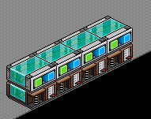
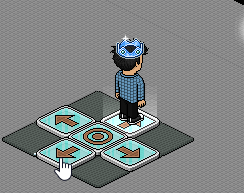
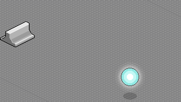
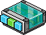
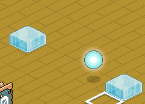

Wired Handbuch für Anfänger
Nr. 5: Möbelrichtung ändern vs Bewegen und Drehen
Inhalt:
1. Einführung
2. Bewegen und Drehen
3. Möbelrichtung ändern
1. Einführung
Möbel können mit verschiedenen Effekt-Wireds bewegt/gedreht werden. Hier betrachten wir zwei Wireds davon: “Möbelrichtung ändern” und “Bewegen und Drehen”. Diese Effekte können sehr gut in Games gebraucht werden. Die Unterschiede der zwei Wireds werden folgend erläutert.
2. Bewegen und Drehen
Das Wired “Möbel bewegen und drehen” enthält gleich zwei Effekte. Du kannst ein Möbelstück drehen und gleichzeitig in alle Richtungen bewegen.
Inhalt:
1. Einführung
2. Bewegen und Drehen
3. Möbelrichtung ändern
1. Einführung
Möbel können mit verschiedenen Effekt-Wireds bewegt/gedreht werden. Hier betrachten wir zwei Wireds davon: “Möbelrichtung ändern” und “Bewegen und Drehen”. Diese Effekte können sehr gut in Games gebraucht werden. Die Unterschiede der zwei Wireds werden folgend erläutert.
2. Bewegen und Drehen
Das Wired “Möbel bewegen und drehen” enthält gleich zwei Effekte. Du kannst ein Möbelstück drehen und gleichzeitig in alle Richtungen bewegen.

WIRED Effekt: Möbel bewegen und drehen
Bei Möbel bewegen (oberer Teil) kannst du auswählen in welche Richtung das Möbelstück bewegt werden soll. In der 1. Zeile (rot) kannst du eine konkrete Richtung eingeben, in der 2. Zeile (blau) sind mehrere Pfeile mit zwei oder mehr Richtungen eingezeichnet. Wenn du diese auswählst wird das Möbelstück zufällig in einer der eingezeichneten Pfeilrichtungen gehen.
Unter Möbel drehen kannst du die Drehrichtung auswählen, die auch auf zufällig eingestellt werden kann.
Möchtest du nur einen Effekt von beiden nutzen klickst du bei dem anderen Effekt den du nicht brauchst auf “keine Bewegung” oder auf “keine Drehung”. Wählst du mehrere Möbel aus und hast die Bewegung oder das Drehen auf zufällig eingestellt, werden alle Möbel einzeln unterschiedlich und zufällig bewegt/gedreht.
Das Wired wird oft für Steuergames gebraucht. Ein Beispiel wird hier gezeigt:
Beispielaufbau:
4x Stapel:
Möbel bewegen und drehen
+ tritt auf Gegenstand

Für jede Richtung ein Stapel
Wired-Stapeln aufbauen, 4x Bodenplatten mit Pfeil und 1x Ringplatte in “+” Format aufbauen, sodass jedes in eine Richtung zeigt. Beliebiger Gegenstand der bewegt werden soll.
Geht man auf Bodenplatte mit Pfeil der nach rechts zeigt, soll das Möbelstück sich nach rechts bewegen usw.

Möbel steuern mit Steuerkreuz
Verwendung: Beim 1. Stapel wählt man im Tritt-auf Wired z. B. den Pfeil nach rechts aus und bestätigt. Bei dem Wired bewegen und drehen wählt man das Möbelstück aus welches man bewegen möchte. Dafür benötigt man nur den oberen Effekt und da wird in der 1. Zeile eine Pfeilrichtung ausgewählt, die in der gleichen Richtung zeigt und bestätigt. Das gleiche wiederholt man dann für die anderen drei Richtungen.
So werden einige Spiele gebaut, wo Möbel bewegt werden sollen. Möchte man jedoch Möbel automatisch dauerhaft und nicht einzeln bewegen, dann ist das Wired “Effekt wiederholen” ideal.
Stapel:
Möbel bewegen und drehen
+ Effekt wiederholen

WIRED Auslöser: Effekt wiederholen
Verwendung: Im Wired “Effekt Wiederholen” wird die Zeit auf 0,5 s gesetzt und bestätigt. (Mehr zum Wired Effekt Wiederholen siehe Nr. 6: Effekt wiederholen vs Periodisch lang).
Das Möbelstück bewegt sich jetzt alle 0,5 Sekunden in der eingestellten Richtung. So können Spiele erstellt werden, wo man ein Möbelstück z. B. “jagen” muss. Wenn das Möbelstück auf ein Hindernis gerät stoppt die Bewegung (nicht bei allen Möbeln!). Aufjedenfall stoppt die Bewegung, wenn ein Habbo den weg versperrt. Mit dem Wired Richtung ändern kann dies umgangen werden, solange es sich nicht um ein Habbo handelt der den Weg versperrt.

Bewegung wird gestoppt durch Hindernis
3. Möbelrichtung ändern
Dieses Wired beinhaltet auch zwei Effekte, jedoch können beide nicht gleichzeitig ausgelöst werden. Der 2. Effekt wird erst ausgelöst, wenn der 1. nicht ausgelöst werden konnte. Bei Start direction wird die Richtung ausgewählt, wohin das Möbelstück gehen soll. Gibt es ein Hindernis (darf kein Habbo sein, weil dieser stoppt die Bewegung völlig) wird die Richtung geändert. Wie die Richtungsänderung sein soll wird unter when move is blocked eingestellt.

WIRED Effekt: Möbelrichtung ändern
Mit dem folgenden Stapel wird ein Möbelstück wieder permanent bewegt und immer, wenn es auf ein Hindernis gerät quasi ausweichen, so wie man es eingestellt hat. Manchmal ist das Möbelstück aber so sehr eingeengt, dass durch eine Einstellung das Möbelstück nicht weiter kommt und stehen bleibt.
Stapel:
Möbelrichtung ändern
+ Effekt wiederholen
Verwendung: Effekt wiederholen auf 0,5 s.
Bei Möbelrichtung ändern unter Start direction letzter Pfeil (nach links) auswählen. Und bei when move is blocked "Turn back" auswählen. Anschließend das Möbelstück auswählen welches bewegt werden soll.

Die Richtung der Bewegung wird geändert
Anwendung findet das Wired z. B. bei Games, wo Möbel wie im Gif hin und her bewegt werden, kollidiert man mit diesem Möbelstück wird man teleportiert oder sonstiges geschieht. Das ist ein weiterer unterschied zu dem Wired bewegen und drehen, denn Richtung ändern kann den Auslöser "Kollision" aktivieren, bewegen und drehen hingegen nicht.
Zusammenfassung, was ist wichtig?
- Mit dem Wired "Möbel bewegen und drehen" können 2 verschiedene Effekte gleichzeitig eingestellt werden
- Das Wired "Möbel bewegen und drehen" kann man für Steuergames sehr gut gebrauchen
- Der Auslöser "Effekt wiederholen" löst Effekte automatisch aus
- Das Wired "Richtung ändern" besitzt 2 Effekte, die nicht gleichzeitig ausgeführt werden können, das heißt der 2. Effekt wird erst ausgeführt, wenn der 1. blockiert wurde
- Mit Richtung ändern können sich Möbel hin und her, diagonal oder sogar im Kreis bewegen
- Habbos blockieren die Bewegungen, die durch beide Wireds ausgelöst werden vollständig
- Richtung ändern Wired kann den Auslöser "Kollision" aktivieren, das bewegen und drehen Wired jedoch nicht